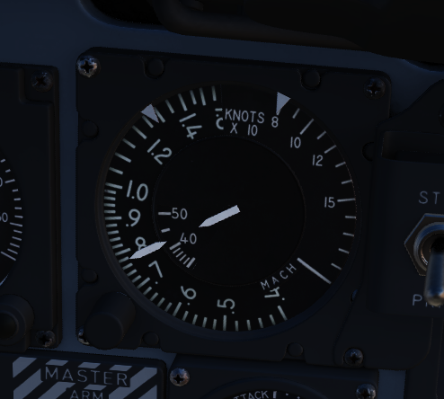
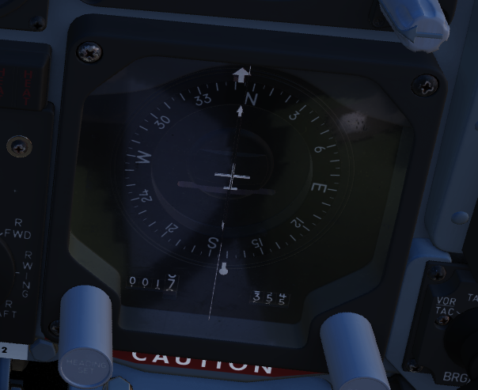

Flight Director Group

Radar Altimeter

Terrain relative accurate height information up to 5000 ft, functions to 30 degrees of bank angle or 35 degrees of pitch. Clockwise rotation of the function control switch on the lower right of the indicator powers the device; continued rotation sets the low altitude warning pointer to the desired height. Below the set altitude, the warning light activates. A self-test, initiated by pressing the function control switch, shows 35
Airspeed and Mach Indicator

The combination airspeed and mach number indicator shows airspeed readings below 200 knots, and include Mach numbers at high speed. The indicator uses a single pointer over a fixed airspeed scale, marked from 80 to 850 knots, with a moving Mach scale presenting from Mach 0.4 to 2.5. A pair of movable reference markers is available with the knob on the face of the gauge, with speed reference available between 80 and 195 knots, and the Mach index pointer being able to be set between the 225 knot and 850 knot regions relative to the airspeed gauge.
Note: Moving these reference markers outside of the respective aforementioned regions can damage them.
Angle of Attack Indicator

Drawing relative wind information from the landing-gear adjacent AoA probe, the AoA indicator offers conditional reference for cruise (7.9 units), approach (19.2 units), and stall (30.00). Because of the AoA probe to the nose gear door and subsequent airflow disturbance when the gear is lowered, actual aircraft AoA is approxiamtely 1 unit higher than indicated, and ON SPEED AoA is roughly 5 knots slower than the given value.
When indicator power is offline due to electrical system configuration or damage, an OFF flag will appear in the window on the face of the gauge. Function of the indexer lights and stall warning vibrator is driven by switches in the indicator.
Reference System Selector Switch

Toggles between the inertial navigation set and AN/AJB-7 displacement gyroscope for attitude information. When set to PRIM, the inertial navigation set provides azimuth and attitude data to the ADI; when on STBY, AN/AJB-7 supplies this information. Azimuth data also feeds into the HSI and BDHI (rear cockpit). Additionally, attitude details are sent to the fire control system.
Note: Inertial information requires the inertial navigator control panel's switch to be on NAV.
When transitioning between STBY and PRIM, immediate attitude information may show unusual gyrations on the attitude director indicator due to initial erection. Rapid turns (above 15° per minute) may temporarily disrupt accurate heading information, requiring straight and level flight for about 20 seconds for manual compass system synchronization (SYNC position)
Attitude Director Indicator

Includes an attitude sphere, turn indicator, steering bars, miniature aircraft, glideslope pointer, flags, and pitch trim knob. It displays pitch, bank, and heading from the selected reference system and allows pitch adjustment via the trim knob. The turn indicator relies on a gyro from the AN/AJB-7 system. The steering bars offer Flight Director guidance for heading interception, navigation, and ILS approaches. The glideslope pointer provides vertical guidance information during an ILS approach.
Horizontal Situation Indicator

Consists of a rotating compass card, single and double bar bearing pointers numbered 1 and 2 respectively, a range indicator, and a range warning flag. Presents a top-down view of the currently programmed navigation. The Heading Set knob is availble to input desired magnetic heading, and the Course Set knob is used to enter VOR radial or inbound localizer course for accurate deviation display.
Altimeter

A counter-pointer style altitmeter, with thousandths in the counter window and 100 foot increments around the face. The altimeter has an absolute range of 80,000 feet. The altimeter includes a barometric scale for setting local pressure with the knob on the indicator. Works in either electric (normal operation mode) or pneumatic (STBY) mode, switchable via a springloaded three position switch labelled RESET and STBY.
Vertical Velocity Indicator

Provides rate of climb or descent via the static pressure system referenced in thousands of feet per minute.
Standby Attitude Indicator

The SAI functions independent of the Flight Director Group, providing reasonably accurate readings (within six degrees) for 9 minutes if power to the system is lost and the OFF flag is in view. Pitch markings are indicated every 5 degrees, while roll markings are in gradations of 10 degrees. Roll is illustrated through 360 degrees, while pitch is limited by stops at 92 degrees in climb and 78 degrees in dive to prevent gimbal lock.
Navigation Function Selector Panel

Controls display presentation on the ADI and HDI based on the selected values on the two knobs; to the left is the Bearing/Distance Knob, and to the right the Mode Selector Knob. The Bearing/Distance Knob determines the source of navigation information for the HSI and ADI. The Mode Selector Knob provides control over the presentation of various displayed information on the HSI and ADI. The Mode Selector Knob includes an inset switch marked FD, for Flight Director. This switch engages or deactivates the pitch and bank steering bars on the ADI; the OFF position has the switch aligned vertically.
Bearing/Distance Knob
| Name | Description |
|---|---|
| VOR/TAC | Magnetic and relative bearing to VOR station and TACAN range displayed on HSI. |
| TAC | Magnetic and relative bearing and range to TACAN station displayed on the HSI. |
| ADF/TAC | Magnetic and relative bearing to ADF station and TACAN range displayed on HSI. |
| NAV COMP | Magnetic and relative bearing and range provided from navigation computer on HSI. |
Mode Selector Knob Display Functions